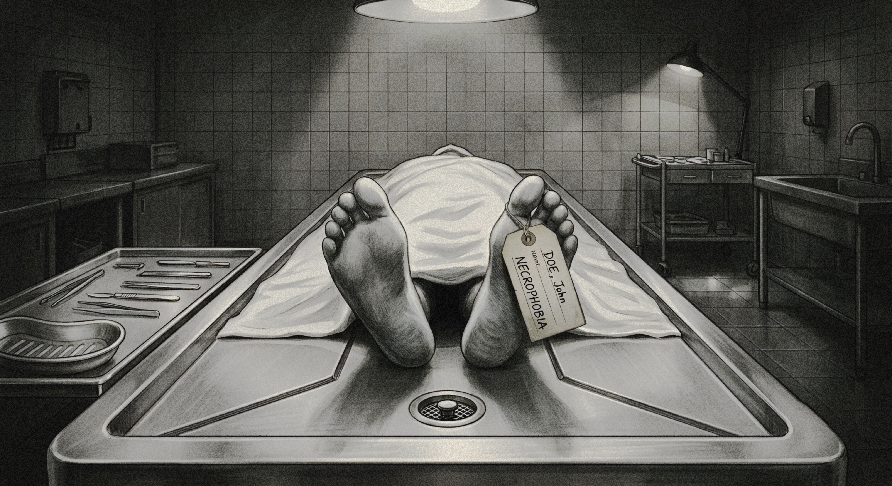

NECROPHOBIA

A young woman working the night shift at a funeral home discovers that some things are not as dead as they seem.
When I was little, there was this children's song titled “Pretty Little Redhead” that I listened to all the time whenever it came on the radio. My dad was an avid music lover, and he collected some really expensive guitars that he affectionately referred to as his babies. The only thing that probably eclipsed his love for music was his love for me, his only daughter.
Whenever I was sad or upset, he would grab one of them and start singing that favorite song of mine to comfort me. He was always slightly out of tune, even back then I could tell, but I never cared. The intention behind it was always much more important to me, and it never failed to put a smile back on my face.
“Now, who’s my pretty little redhead?” he would always say with the last strum of his hand across the strings.
My little hand would shoot up into the air as high as I could manage, and he would laugh before pulling me into his arms.
He passed away from sudden cardiac arrest a few months after my sixth birthday. I don't remember much about the days that followed, but I remember the song. For a long time, it was one of the few things I had left of him.
As I stood there next to his coffin, I felt this strange, unfamiliar feeling creeping over me as I stared at his pale, contorted face. That was a face I could barely recognize. His body was bloated and reeked of embalming fluid, his skin caked in powder to hide any signs of livor mortis. Death was still a foreign concept to me at that age, especially when just a few days earlier, he had still been my silly dad, making up songs to narrate my childish mood swings.
Now, with only my mom and me, life went on, albeit not smoothly. With no particular skills or experience to fall back on, she had no choice but to sell all of his expensive guitars to support us until she managed to land a modest bookkeeping job at a small bookstore a few blocks away.
Our routines shifted drastically overnight. She would drop me off at school on her way to work every morning, and I would wait at her friend’s place nearby until she finished work in the afternoon and came to pick me up.
One morning, years later, I woke up to find an unfamiliar man sitting in our dining room, in the chair I had grown so used to seeing occupied by my dad. They were in the middle of a conversation, and my mom was brushing her hand against his affectionately as they laughed about “last night.”
That was the day my relationship with my mom changed for good.
I moved out of the house and in with my boyfriend at the time, and we pretty much became estranged. I was angry that she had finally moved on. I knew it wasn't fair of me, but I couldn't help myself.
I took various jobs to support both of us while Rocco kept himself busy with his bandmates, pursuing their dream of breaking into the music industry. That eventually led me to George Tafel’s funeral home.
Halfway through my night shift at the funeral home, I nearly fainted when the dead man let out a sigh. It was barely audible, more breath than sound, yet unmistakable. I had just finished washing the body of old Mr. James Tripplehorn and found myself lingering, staring at his wrinkled face a second longer than necessary.
His skin was so pale it looked as though it had been dusted with powder, an unnatural, chalky white that caught the harsh light above. His eyelids hung half open, exposing the cloudy blue of eyes that no longer saw anything. The sight alone was enough to unsettle me, but it was the stillness that pressed in on my chest, heavy and suffocating.
The neon lamp overhead droned in a steady, monotonous buzz, filling the room in a way silence never quite could. My own breathing sounded too loud in comparison, uneven and frayed at the edges. And then, threading through it all, came that sound again. A faint, weary sigh, so soft I might have imagined it, yet so distinct it made the air feel suddenly colder.
I backed away at once, my whole body beginning to tremble as the fear finally caught up with me. Only then did I notice how unnaturally quiet the funeral home had become. The silence felt wrong, as if it were pressing in from all sides.
Against my will, my gaze drifted back to the dead man’s face. It was frozen in a twisted expression of deep agony, the stiffness of rigor mortis having set in hours ago, locking that final moment in place.
Earlier that afternoon, I had overheard Mr. Crowe speaking in a hushed voice to Mrs. Tafel. He told her that Mr. Tripplehorn had died of acute benzodiazepine intoxication. A suicide, he said, as though the word itself needed to be handled with care.
By then, the story had already begun to circulate among the staff in quiet fragments. The man had spent the last three years behind bars after being found guilty of multiple counts of assault and the murder of several young women. I did not know every detail, and I had no desire to. What little I had heard was enough to leave a sour, lingering weight in my chest.
His lawyer had tried to argue that he was not guilty by reason of mental illness, a last attempt to shift the narrative into something more complicated, perhaps more forgivable. The judge dismissed it without hesitation. He was to be sentenced to life imprisonment without the possibility of parole.
I tried to slow my breathing, dragging air in through my nose and out through my mouth, but it kept catching halfway. I wiped my eyes with the back of my arm, hard enough to see stars for a second, and told myself I must have imagined it. Night shifts do that to you. They stretch your nerves thin, make shadows feel heavier than they should.
Still, that sound lingered. It had already carved out a place in my head, replaying itself whether I wanted it to or not.
I opened my mouth, ready to say something, anything, just to prove I was still in control of the room. Maybe I would call out to him like an idiot, or laugh it off just to hear a human voice. But nothing came out. My throat tightened, the words strangled before they could even form.
So I stood there and waited.
Seconds passed. Then a full minute. The buzzing of the neon light filled the space again, steady and indifferent. Nothing moved. Nothing breathed. Mr. Tripplehorn lay exactly as he had before, cold and motionless.
He had been dead for over fifteen hours. So what, exactly, had I just heard?
As if in answer to my confusion, a faint, low hiss slipped into the silence and spread through the room. This time there was no mistaking it. It was coming from the dead man’s sewn shut mouth, as though something behind it was forcing its way out, as though he were grinding his teeth in some unseen agony. Unsettling did not even begin to cover it.
My blood turned to ice. Instinct took over before I could think. I rushed to the door, yanked it open, and bolted into the long, dim corridor. My footsteps echoed too loudly, too fast, and with each step it felt like my knees might give out beneath me.
Mrs. Tafel barely looked up from the old gossip magazine in her hands when I shoved her office door open. A cigarette was pinched between her two small fingers, the smoke curling lazily toward the ceiling. I stumbled inside without thinking.
She gave me a brief, disapproving glance, her large diamond hoop earrings catching the glow of the desk lamp and flashing with every slight movement of her head.
“Yes?” she grunted, giving a perfunctory nod that felt more annoyed than concerned.
“Mrs. Tafel… I mean, Maya… there’s… there’s something terribly wrong with Mr. Tripplehorn’s body,” I croaked, my voice breaking as I clutched my hands together, still shaking, still half on the verge of tears.
“What do you mean, ‘wrong’?” she asked, her eyes never leaving the magazine.
“He… I mean… it… it was making these weird noises and…”
“What weird noises?” she cut in, setting her magazine aside at last and looking up at me with a deepening frown.
“It… it groaned. And… and… it hissed at me.”
The moment the words left my mouth, I felt how ridiculous they sounded, even to my own ears.
Mrs. Tafel didn’t respond right away. She simply rolled her eyes and drew in a slow breath through the cigarette clenched between her small teeth. The tired, faintly irritated look on her round, plump face said everything.
“Anne, was it?” she said, as if I hadn’t been working at the funeral home for the past five months. A thin, almost absent smile pulled at her lips. “I’ve been doing this for, what, fifteen years now? Took over after my husband died. The place just… fell into my lap.”
She held out a cigarette toward me. I shook my head, forcing a weak smile. She gave a small shrug and drew it back.
“Wasn’t exactly my dream. Didn’t want it. Didn’t like it. But that didn’t really matter. This town needed someone to keep things running, and… well. Here I am.”
She took a long drag, the tip flaring briefly, then dropped the cigarette and crushed it under the table with the heel of her shoe.
“My husband, though… he was a good man. Really good. The kind of person people don’t forget. Made it hard to follow that up, you know? People around here…” She trailed off, shaking her head. “They watch everything. Judge everything. You mess up once, just once, and suddenly it’s a whole production. Honestly, you’d think we were living in biblical times or something.”
She let out a short, humorless laugh.
“I could’ve torn this whole place down, you know. Started over. Opened a boutique or a salon or something. Anything but this.” She gestured vaguely, as if the entire building offended her. “Gotten away from the smell, the whole… atmosphere. But I didn’t. And if that’s not selflessness, I don’t know what is.”
She took a sip of her now cold coffee. The silence that followed stretched a little too long, settling into the room in an uncomfortable way.
“I’m the kind of person who fixes things. People included,” she went on, her voice taking on a sharper edge, almost impatient despite its oddly childlike pitch. “I push them to be better. Did it to myself years ago. And now, kid, I’m gonna do the same for you. We’re a team here. I need you to pull your weight and do your job right.”
I just stared at her, caught somewhere between confusion and a growing sense of dread. It wasn’t even the story she had just told, which felt more like a thin excuse for her own arrogance. It was the way she kept skirting around what I had said, like it didn’t matter at all, like I hadn’t just run in there half out of my mind.
I had to admit, at least to myself, that I hadn’t exactly come into this job prepared. I had no experience with the dead when I applied. I figured I would just learn as I went and somehow be fine. I didn’t hate it. It just wasn’t what I had imagined for myself.
But in Glenmore, choices were limited. It was a small town where most people my age ended up working the same land their parents did, stuck on old farms that never really changed. Compared to that, this place had felt like a way out.
“I don’t make concessions for anyone,” she said, already lighting another cigarette. “It’s my business. I run it how I want.” She gave a small shrug. “Now go finish what you were doing, silly girl. I’m busy.”
She waved me off with one hand and went right back to flipping through her magazine like I wasn’t even there. I left without another word, feeling small and stupid for even coming in. It wasn’t the first time she had brushed me off like that, and something told me it wouldn’t be the last.
I checked my watch as I stepped into the hallway. A few more hours and I could call it a night. Maybe I’d throw together some chicken soup when I got home, something warm and simple. I just hoped someone could cover my shift tomorrow. I already knew I didn’t want to come back.
The corridor stretched ahead of me, long, narrow, and dimly lit. My footsteps echoed against the dull green walls, too loud in the emptiness.
I must have imagined it, I told myself. There’s no such thing as…
I pushed the door open. It creaked loudly, the sound dragging out longer than it should have. The body was exactly where I had left it, lying flat on the porcelain table under that strange bluish light from the lamp above. Pale. Still. Obviously dead.
What had I been expecting? That it would be gone? That it had somehow sat up and walked off for a stroll? The thought almost made me laugh, but the sound caught in my throat before it could come out.
My stomach tightened as I stepped closer, slow and careful, not wanting any more surprises tonight. I was painfully aware of how ridiculous I must have looked earlier.
Mrs. Tafel wasn’t someone you wanted to test, not after I had already started off on the wrong foot by showing up late on my first night. If there was anything she hated, it was attitude and lateness. I had gotten lucky she hadn’t snapped at me or torn into me properly. She had looked like she was about two seconds away from doing it.
I glanced back over my shoulder at the rectangular doorway behind me, suddenly aware of how alone I was again. The room felt heavier than before, damp and oppressive, like the walls themselves were closing in.
But I had a job to do.
Whether I liked it or not didn’t matter. The excitement I had felt at starting over was long gone. My ex-boyfriend of three years, Rocco, who always beat me whenever things didn’t go his way, had dumped me and thrown me out just like that. All I had left were fading bruises and darkened scars scattered across my body, painful reminders of my own stupidity for having held onto him for far too long.
I had nowhere else to go either. Looking back, I knew I should have been kinder to myself, should have paid attention to the red flags I kept brushing aside because they came wrapped in charm and just enough affection.
Now I just kept telling myself the same thing over and over.
I needed this job.
I reluctantly grabbed a clean, neatly folded cloth, crumpled it in my hand, and began dabbing it against the dead man’s pale chest. He was so thin I could feel the ridges of his ribs beneath the skin. As the minutes passed, my fear started to loosen its grip, if only a little. Without thinking, I found myself humming the song again.
My thoughts involuntarily went back many years, to when I was a frail little girl who barely spoke and was always trying my best to remain invisible. That, unfortunately, made me an easy target for the other kids at school. Especially Reba Wilkinson and her equally evil twin brother, Joseph. Together, they made middle school feel like hell.
They made fun of my hand me down clothes, my red hair, pale skin, freckles, and everything else I owned. They would pull my hair, step on my shoes, shove me in the hallways, and laugh whenever I tried to protest. I learned pretty quickly that the less attention I drew to myself, the better.
There were days when it became too unbearable, and I would hide in one of the cubicles in the girls’ bathroom and cry for hours. That was when I would remember what my dad used to do to comfort me. He would sing to me while gently caressing my hair and telling me that everything was going to be alright. As I grew into adulthood, it became something of a secret ritual for me. Whenever things got too difficult, I would find somewhere quiet, retreat into myself, and hum that same song under my breath until I felt calm again.
I yawned and shook my head, trying to keep myself awake, and kept the tune going under my breath. It helped me focus. Because the moment I stopped, I heard it again.
At first I thought it was just the echo of my own voice bouncing off the walls. I held still, listening. Then it came again, clearer this time. A low, guttural sound, like something caught deep in a throat, followed by a long, faint wail that made every hair on my body stand up.
My heart jumped into my throat. The cloth slipped from my hand and landed on his chest. This time, I knew I hadn’t imagined it.
I stepped back quickly, just as the door behind me flew open with a sharp metallic screech. I let out a small, involuntary yelp and spun around.
Mrs. Tafel stood there, frowning.
“What now?” she snapped.
She didn’t wait for an answer. She walked past me and went straight to the table like this was nothing, like this was routine.
I tried to speak, but my voice wouldn’t come out. Something about her expression told me she wasn’t expecting an explanation anyway. So I just stood there, shaking, and watched.
She pulled on a pair of gloves, picked up the cloth I had dropped, then tossed it aside like it annoyed her. With two fingers, she pressed down on the corpse’s chest a few times. A wet, sloshing sound came from its grayish mouth. Then it happened again. That same guttural groan.
I stumbled back another step.
“He’s decomposing faster than usual,” she said flatly, like she was commenting on the weather. “They didn’t find him for hours. What do you expect?”
I swallowed hard and forced myself to speak.
“But… that noise,” I said, my voice trembling. “You heard that too, right?”
She glanced at me. “So?”
“So how is that even possible?” I could hear myself starting to panic again. “He’s dead. He’s been dead.”
She narrowed her eyes at me for a moment, carefully considering what might be the most cutting insult to hurl at my incompetence. But she merely clicked her tongue and shook her head.
“When someone dies, air can get trapped in the lungs or the stomach,” she said. “As the body breaks down, gases build up. That’s normal.”
I didn’t say anything. My face felt cold, my lips pressed tight, and I could feel tears slipping down before I could stop them.
“If you move the body, or press on it like this, that gas can shift,” she went on, pressing lightly again for emphasis. “Sometimes it comes out as sound. Sometimes the body even moves a little. It happens.”
I just stared at her, waiting for something more. Some explanation that would make it feel less wrong, less like what I had heard. I swallowed hard, again and again, my throat tight with something between fear and embarrassment. A minute ago, I had been terrified. Now I just felt stupid. And somehow, that didn’t make it any better.
“As it passes the vocal cords,” she murmured, “it can make that kind of sound. The groaning, the hissing. It’s normal.”
I said nothing. I just stood there and watched as she pulled a white linen sheet over the body, covering the face last.
It’s almost impossible to consider such carefully explained scientific details about what might cause those postmortem sounds when you have a dead body making them right before your eyes. I understood what Mrs. Tafel was saying. I knew that gases could build up inside a corpse, that muscles could contract, and that air could sometimes be forced through the vocal cords and produce strange noises.
But knowing all that didn’t make it any less disturbing.
There was something deeply wrong about standing in that room and listening to a dead man groan, hiss, and wail as if he were trying to communicate with me. No amount of scientific explanation could completely erase the instinctive part of my brain screaming that dead people simply weren’t supposed to make sounds like that.
“Get him back in the freezer,” she said sharply. “I’ll find Patrick and have him bring the stretcher.”
She walked out without a glance in my direction. I nodded to no one and took a second to steady myself before moving.
And just like before, I found myself alone again with the body, staring at it and wondering if it was going to test my nerves to the breaking point all over again. His half open, foggy eyes stared lifelessly up at the ceiling, reflecting the light overhead. From where I stood, the reflection made them look almost as if tears were welling up in his eyes.
I blinked and quickly looked away. A shudder ran through me.
Mrs. Tafel was right. This was stupid. I was letting myself get worked up over nothing. It was a dead body. It couldn’t hurt me. He was dead. Whatever noises I had heard were just gases escaping from a decomposing corpse. There was a perfectly reasonable scientific explanation for all of it.
Unlike my ex-boyfriend, who was pretty much still alive and had broken into my apartment while fully inebriated more than once, just to give me a few more beatings for good measure. At least Mr. Tripplehorn had the decency to stay where I left him. I almost laughed at the thought, but the sound died in my throat.
Maybe that was the part I was having trouble with. I had spent so long being afraid of a man who was alive, breathing, and perfectly capable of hurting me that being frightened of a corpse shouldn't have made any sense. A dead man couldn't chase me down the hallway. He couldn't corner me against a wall. He couldn't grab me by the hair or slam my head against something when he was angry.
Mr. Tripplehorn couldn't do any of those things.
He was dead.
I repeated that to myself again as I forced my eyes back toward the table. This time, the body remained silent.
Thank God.
Mrs. Tafel and Mr. Crowe returned with a stretcher a few minutes later. The former looked as if she had something foul smelling permanently lodged beneath her nose, as usual, while the latter looked exhausted and almost as pale as the dead man himself.
Without saying much, we carefully moved the body onto the stretcher. His skin was piercingly cold against my fingertips, cold enough to make me instinctively pull my hands away for a moment.
I forced myself to keep going.
His body had already begun to stiffen, and his limbs felt strangely rigid beneath my hands. When we lifted him, his head resisted the movement before shifting slightly to one side, his half open, foggy eyes staring blankly toward the ceiling.
I tried not to look at them.
After everything that had happened, I really didn't need another reminder that I was standing in a room with a dead man who had already made enough noises to scare years off my life.
“He had a particular thing for redheads,” Mr. Crowe murmured under his breath as we pushed the stretcher containing Mr. Tripplehorn’s body through the narrow corridor, making all the hairs on my arms stand on end. “That’s what I heard on the news.”
“We really didn’t need to know that, Patrick.” Mrs. Tafel shot the old caretaker a dirty look, as if she were about to slap him for that unnecessary piece of information. “Now, get to work.”
The wheels squeaked with every turn, loud and grating, echoing off the walls along with my footsteps. Somewhere outside, I could hear the wind howling and rain hammering against the windows. It hit me then that I had left my raincoat at my cousin’s place.
The storm had gotten worse.
As we kept moving, I started to notice the cold. Not just the usual chill of the building, but something deeper, sharper. The kind that seeps in slowly and settles in your bones. Maybe it was the weather. Or maybe it was just the silence, the kind that makes you feel like you’re the only person left in the world. Either way, it made me shiver.
Mrs. Tafel mentioned something about some documents that Mr. Crowe needed to have a look at, so when they reached her office, they both stepped inside, leaving me to continue pushing the stretcher by myself.
By the time I reached the end of the corridor, my fingers felt stiff. I hit the elevator button and waited, my eyes drifting toward the windows. Lightning flashed, bright and sudden, slipping through the edges of the blinds and lighting up the hallway for a split second. I stepped closer and tried to peek outside, but it was just darkness.
I couldn’t wait to get home. A hot shower, a quiet room, anything but this place.
The elevator doors opened with a dull metallic groan. I pushed the stretcher inside as carefully as I could, angling it sideways so I could still squeeze in beside it. The elevator suddenly felt smaller, and more cramped than I was used to. With the stretcher taking up most of the space, there was barely enough room for me to stand without brushing against it.
I stepped inside and pressed myself against the wall, keeping as much distance from the covered body as possible. The stretcher was only a few inches away from me. I could have reached out and touched it without even extending my arm.
The doors slid shut with a soft mechanical hiss, sealing the two of us inside. For a moment, neither of us made a sound. I could hear the faint hum of the elevator motor, the rain tapping somewhere beyond the walls of the building, and my own breathing.
I pressed the button for the ground floor. Nothing happened at first. Then the elevator gave a small shudder beneath my feet. It lurched downward, just enough to make the wheels of the stretcher creak against their locks, before settling into a slow descent. It wasn't my first time riding down with a body, and I told myself it was just another part of the job. Routine. Normal.
I had already washed the man, moved him onto the stretcher, and listened to him make enough horrible noises to scare me half to death. There was no reason to be frightened now. He was covered. He was secured. He was dead. Very dead.
I repeated that last part to myself as the elevator continued its slow descent. Then the light above me flickered.
Once.
I looked up. It came back on immediately.
Twice.
My stomach tightened.
The third time, it flickered so rapidly that the entire elevator seemed to stutter between light and darkness. The pale fluorescent bulb buzzed overhead, growing louder with each flicker.
“Come on,” I muttered.
The light flickered again. And then it went out completely. The darkness hit all at once. I let out a sharp yelp before I could stop myself and immediately felt embarrassed, even though there was nobody there to hear me. Well, nobody alive, anyway. The thought came and went so quickly that I almost didn't notice it.
I stood perfectly still, waiting for the emergency lights to come on. They didn't. For a few seconds, all I could hear was the faint hum of the elevator and the rain somewhere outside the shaft.
Then the elevator jerked violently. The stretcher rattled beside me. I grabbed the wall to steady myself as the entire car shuddered, followed by a horrible metallic screech that seemed to come from somewhere beneath my feet. And then everything stopped. The silence that followed was somehow worse than the darkness.
Everything went still. No movement. No sound. Just me. And the body. This can’t be happening, I thought, my heart slamming against my ribs. Of all the things I had tried not to think about since starting this job, this was the one that always came back.
Getting stuck in here. Not alone.
“Hello?” I shouted, my voice cracking as it bounced uselessly off the walls. “Mrs. Tafel? Can anyone hear me? Hello?”
The realization hit me all at once. I was stuck between floors. No one could hear me. Not in the storm. My eyes burned as tears welled up. I shook my head hard, trying to push the thought away before it could spiral into something worse.
“Mrs. Tafel? Help! Anybody?” I slammed my hands against the elevator doors, over and over, blind in the dark. My chest heaved as panic took over. After a while, I stopped, squeezing my eyes shut and dragging in a shaky breath. I rubbed my face, but it didn’t help.
The silence came back, thicker than before. It pressed in from all sides, mixing with the darkness until it felt like it was swallowing me whole. Whatever hope I had left started to slip away.
I sank to my knees. My hands spread against the cold floor as my body shook, and before I knew it, I was crying. Quiet at first, then harder, my breathing coming in uneven bursts. I squeezed my eyes shut, clinging to the stupid thought that maybe, if I opened them again, the lights would be back. That this would all be over.
I opened them. Nothing. Still dark. Still silent. Still trapped. Something inside me snapped. Why hasn’t she come?
I pushed myself up, unsteady, my legs barely holding me. Then I started again, kicking the doors, pounding on them with everything I had left.
“Hello?” I yelled, my voice turning sharp, angry. “Can anybody hear me?”
The fear didn’t go away. It just changed. I had never felt anger like that before. Not when Rocco beat me up like a dog whenever I said the wrong thing. Not when he dumped me and threw me out like I was nothing. Not when my own mother slapped me across the face over something as stupid as cigarette money. Not even when Mrs. Tafel talked down to me like I was beneath her.
This was something else. The fear was still there, crawling beneath my skin, but it was no longer the only thing I could feel. Something hotter had taken its place, something that had been buried inside me for so long that I had almost forgotten it was there. I was angry, and for once, I wasn't interested in swallowing it down.
I was angry at the elevator. Angry at the darkness. Angry at the dead man lying beside me. Angry at Mrs. Tafel for sending me down here as if none of this mattered. Angry at Rocco, angry at my mother, and perhaps most of all, angry at myself for always being afraid.
I had spent most of my life trying to make myself small enough that nobody would notice me. I kept my mouth shut, avoided confrontation, and endured things I never should have endured because I was always more afraid of what might happen if I fought back. But now I was trapped in a dark elevator with a dead man, and something inside me had finally snapped.
For the first time in a very long time, I didn't want to hide.
My face burned, my hands hurt, but I didn’t stop. I was done being ignored. Done being treated like I didn’t matter.
The thought came to me, clear and sudden. When I get out of here, I’m done. I meant it. I would walk out, leave this place, leave this town, and never come back. The idea had been sitting in the back of my mind for years, quiet and easy to ignore. Not anymore. This time, it felt real.
“Hello? Mrs. Tafel? Can anyone hear me?”
Nothing.
I dragged in a breath, opened my mouth, ready to scream again. Then I heard it.
At first, I thought it was the elevator coming back to life. Maybe the power had kicked in. I held still, listening, trying to catch the rhythm of it. But it wasn’t the usual mechanical noise. No clanking, no hum of movement. This was different.
A low, crackling hiss crept through the darkness, thin but constant, like something breathing through broken glass. Then came a wet, uneven rattling sound, like air being dragged in and out of something that shouldn’t be breathing at all.
I froze.
For a second, I couldn’t even think. Then Mrs. Tafel’s voice came back to me, calm and dismissive.
It’s just gas. That’s all it is. The dead can’t hurt you.
I swallowed and forced air into my lungs, clenching my fists until my nails bit into my palms.
“Hello?” I called again, trying to keep my voice steady. “Mrs. Tafel? Can anyone hear me?”
A guttural wail rose behind me. I flinched, then pressed my lips together, shaking my head like I could block it out.
“It’s just gas,” I muttered under my breath. “That’s all it is. Mrs. Tafel? I’m stuck in here!”
I shoved my hands against the elevator doors and tried to force them apart. They didn’t move. I kicked them, hard, the impact shooting pain up my leg.
Another wail echoed through the elevator. It sounded different this time. Sharper. Almost… intentional.
My stomach twisted. Even after everything Mrs. Tafel had said, something about it didn’t sit right. Gas didn’t sound like that. It couldn’t.
“Hello?” I shouted, louder now. “Can anybody hear me?”
A low grumble rolled through the darkness, rising just enough to feel like an answer, before cutting off completely.
Silence rushed in after it. And somehow, that was worse.
I held my breath, straining to hear anything, my heart pounding so hard it made my ears ring. The quiet pressed in, thick and suffocating, and every nerve in my body lit up at once.
It’s just gas, I told myself. Get a grip. He’s dead. He can’t—
The wail came back.
Louder and… closer.
Before I realized what I was doing, I was already humming to myself, my forehead pressed hard against the cold metal wall. It was the same little song my father used to sing to me whenever I was scared or upset, back when I was still a little girl who would hide in the bathroom and cry whenever things became too much.
“Oh, my pretty little redhead,
Why do you cry tonight?
Now lay still in bed,
The moon will hold you tight.”
The words were simple and childish, almost embarrassingly so, but they had always made me feel safe. And for a few minutes, I could pretend that nothing outside that little room could hurt me.
I closed my eyes and kept humming, trying to steady my breathing. For a moment, I almost forgot where I was. Almost forgot about the darkness, the broken elevator, and the dead man lying right beside me.
Something shifted behind me. A cold draft brushed against the back of my neck. I went completely still. Then came another sound. Not a wail but something else.
My blood ran cold.
“Please!” I screamed, the panic breaking loose all at once. “Somebody help me! Get me out of here! Please!”
He had a particular thing for redheads…
I slammed my fists against the doors again and again, kicking, hitting, anything to make noise, anything to drown it out.
Then something moved in the dark, and the entire elevator shook as a pair of feet landed heavily on the floor right behind me. The sound kept going. Not a cough. Not a hiss. Not a growl.
It was a faint chortle, soft at first, before growing deeper and turning into a guttural laugh that echoed throughout the elevator and shook the whole car.
I screamed and screamed, and I didn’t stop until my voice gave out and everything went black.